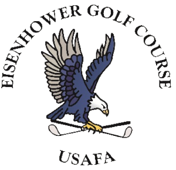

Holding dual Bachelor's degrees in Computer Science and History, I am a hard-working individual with a diverse and unique skillset.
In addition to my technical background as a DevSecOps Engineer, my journey includes extensive expereince in journalism, community engagement, music performance, and leadership.
Full Job History
DevSecOps Engineer - Associate Software Engineer
Parsons Corp. | Colorado Springs, CO | April 2022 - April 2024
- Asked by name to work on the AFRL ODIN software factory after working on DoD Platform One software factory.
- Help build PaaS for onboarding software to classified spaces.
- Build/maintain customer CI/CD pipelines using GitLab.
- Work in/configure AWS-hosted, RHEL Kubernetes cluster.
- Create live/video demos to be presented to government officials.
- Create customer-facing technical documentation and internal technical reports/documentation.
- Contribute to open-source hardened container repository.
- Train newer engineers on DevSecOps and CI/CD processes.
Software Engineering Intern
Parsons Corp. | Colorado Springs, CO | May 2021 - April 2022
- Contribute to open-source hardened container repository.
- Help facilitate Big Bang PaaS upgrades into AWS Kubernetes clusters.
- Intall and configure hardened containers into Big Bang environments.
- Create technical documentation and writeups for internal and third party software.
- Assist with building internal and customer CI/CD pipelines

Golf Course Gardener
Air Force Academy NAF - Eisenhower Golf Course | USAF Academy, CO | May 2019 - August 2022
- Prepare course for tournaments including PGA and NCAA events.
- Perform tasks to maintain course conditions including mowing, weeding, irrigation, fertilizing, and hole cutting.
- Perform additional construction, maintenance, and repair tasks when required.
- Operate machinery including mowers, rollers, utility carts, trucks, and
- Interact and socialize with golfers to provide friendly and welcoming atmosphere.
Equipment Manager - Part Time
CU Boulder College of Music | Boulder, CO | July 2021 - December 2021
- Set up, configure, operate, and tear down audio and utility equipment as required.
- Transport equipment to/from stadiums and event centers as required.
- Assist directors and coordinators with any miscellaneous tasking.